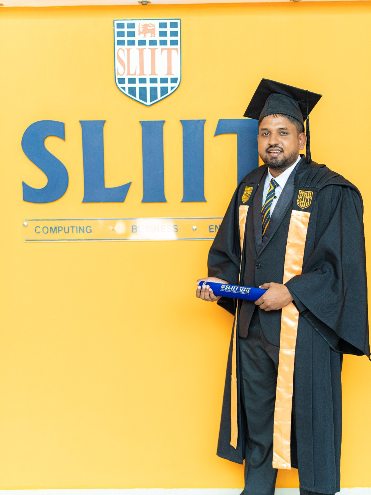

SLIIT
BSc (Hons) in Information Technology with a Cyber Security specialization. This academic base supports the SOC, CTI, GRC, and risk-management work shown throughout the portfolio.
BSc (Hons) in Information Technology with a Cyber Security specialization. This academic base supports the SOC, CTI, GRC, and risk-management work shown throughout the portfolio.
“A strong academic foundation becomes even more valuable when it connects directly to real monitoring, response, and risk work.”
Portfolio note for the SLIIT milestone sectionKey academic and foundational steps that shaped this cybersecurity profile.
Specialized in Cyber Security, building a foundation across security concepts, secure practices, risk awareness, and the practical thinking needed for modern cyber defense work.
The portfolio connects academic preparation with trainee roles and professional SOC work, showing a clear path from study to operational security practice.
Completed Advanced Level studies in the Physical Stream with 2 Cs and 1 S, providing a disciplined analytical base before moving into higher education and cybersecurity specialization.

This academic milestone page is designed to make the SLIIT connection visible and clear, while also emphasizing the knowledge areas reflected in your CV and cover letter.